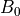
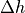
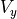

ケルビン・ヘルムホルツ不安定¶
- 著者
松本洋介（千葉大学）
背景¶
二つの運動している媒体が相対速度を持って接している場合、境界領域においては速度シア層が形成される。その速度シア境界は擾乱に対して不安定であることが19世紀後半より知られており、これを初期の研究者の名前から因んでケルビン−ヘルムホルツ（Kelvin-Helmholtz、以下KH）不安定と言う。速度シア境界は、地球大気中から天体現象において普遍的に存在し、KH不安定の発達は幅広い領域において応用されている。本巻で取り扱う実験室や宇宙空間でのプラズマ現象においても例外ではなく、速度シア層が存在するプラズマ物理領域に置いてKH不安定が成長し、各領域において重要な役割を果たしている。
KH不安定自体は流体的不安定であるため、プラズマ中でのKH不安定の非線形発展については主にMHDシミュレーションによる研究が行われている。例えば、活動銀河核などから放出される宇宙ジェットのMHDシミュレーションが多く報告されているが、KH不安定がジェットの安定性に大きな影響を与えていることが明らかになっている （ Ferrari et al., 1998; Baty et al., 2003 ） 。このようなMHDシミュレーションによるアプローチは、太陽風と接する地球磁気圏境界において成長するKH不安定に対しても適用されてきた。
線形理論¶
数値計算による非線形発展を示す前に、線形理論から導かれる不安定条件と成長率を示す。これらは数値計算の初期設定、計算結果の妥当性を確認するのに有益である。
いま、プラズマが  方向に流れ、速度が
方向に流れ、速度が  方向に差し渡し 変化している速度シア層を考える。また、背景磁場は の成分を持つ。このようなプラズマ中でのKH不安定の成長は、磁場の存在とプラズマの圧縮性に大きく影響を受ける（詳しくは文献 Chandrasekhar 1961, ; Miura & Pritchett, 1982 を参照のこと）。
方向に差し渡し 変化している速度シア層を考える。また、背景磁場は の成分を持つ。このようなプラズマ中でのKH不安定の成長は、磁場の存在とプラズマの圧縮性に大きく影響を受ける（詳しくは文献 Chandrasekhar 1961, ; Miura & Pritchett, 1982 を参照のこと）。
ここで、2つの特別なケースを考えよう。まずは、背景磁場が背景速度と同じ方向に向いている場合、すなわち の場合、速度シアの大きさについて
(1)¶
の条件を満たす場合に不安定となる。ここで はAlfven速度、 は音速である（  、
、  、
、  はそれぞれ質量密度、圧力、比熱比である）。速度シアの大きさ が より大きい必要があるのは、速度場の面内に磁場が存在すると磁気張力が安定化の働きをもたらすためであると直感的にも理解できる。また音速で制限されているのは、プラズマの圧縮性による安定化の効果である。このことから、平行磁場（
はそれぞれ質量密度、圧力、比熱比である）。速度シアの大きさ が より大きい必要があるのは、速度場の面内に磁場が存在すると磁気張力が安定化の働きをもたらすためであると直感的にも理解できる。また音速で制限されているのは、プラズマの圧縮性による安定化の効果である。このことから、平行磁場（  ）の場合は高
）の場合は高  プラズマ、例えば、宇宙ジェットのような弱い磁場領域に適用される。ここで、 はプラズマ圧力と磁気圧力 との比である。
プラズマ、例えば、宇宙ジェットのような弱い磁場領域に適用される。ここで、 はプラズマ圧力と磁気圧力 との比である。
一方、垂直磁場（ ）の場合は
(2)¶
が不安定条件であり、亜磁気音速の流れであれば常に不安定である。このような条件は様々なプラズマ 領域に適用可能であり、特に低緯度磁気圏境界においてはこの条件が満たされていると考えられている。現実には波数ベクトル、磁場、流れの向きが様々であり、それぞれの状況において不安定条件は違うが、一般に垂直磁場条件が最も不安定であり、平行磁場条件が最も安定化されやすい。
KH不安定の成長率は上記条件に加え、速度シアの厚みが時間スケールを決める。以下では、数値シミュレーションでも用いられる一般的な速度シアの関数に対する成長率を求める。シミュレーションでは初期条件として
(3)¶
の形で速度プロファイルがしばしば与えられる。また、ここでは垂直磁場配位 を考えよう。プラズマの圧力はプラズマ より決まり、密度と共に一様に与える。このような条件の下でMHD方程式を線形化し、得られた線形MHD方程式を固有値問題として数値的に解くことにより固有値（成長率）と固有関数が得られる（詳細は省く）。
KH不安定の成長率とそれに対応する不安定モード。横軸は速度シアの厚み  で規格化された波数、縦軸は で規格化された成長率。¶
で規格化された波数、縦軸は で規格化された成長率。¶
上図 は、 、 の場合の成長率とそれに対応する不安定モードを表す。これより、最大成長率は であり、対応する不安定モードは であることがわかる。これらを元に計算領域のサイズを決める。また、計算結果から得られた成長率を求めることにより、計算の妥当性のチェックを行う。
結果¶
上記線形解析結果のパラメタを用いてシミュレーション結果と線形理論との比較を行う。背景場は
(4)¶
の関数で設定され（model.f90参照）、それぞれ使用するパラメタは、




{kind=link}
である。境界条件は、 方向は周期境界、 方向は反射端境界とした。

におけるKH不安定の非線形発展結果。色は圧力、矢印は速度場ベクトルを表す。¶
図 はシミュレーション結果で、KH不安定に特徴的な渦形成とそれに伴った低圧・高圧ペアが確認できる。
{kind=link}
最大成長率モードのフーリエ振幅の時間発展¶
得られた計算結果の妥当性を調べるため、速度擾乱成分である  を 方向にフーリエ変換し、 方向に平均化した最大成長率モード(モード数１）のフーリエ振幅の時間発展を調べたのが 上図 である。また比較のため、線形解析で得られた成長率（ ）の傾きを同時にプロットした。結果、シミュレーションで得られた最大成長率モードの線形成長率は、線形解析結果が予測した値に沿う。また系の発展の後半での振幅の振動はKH不安定の非線形現象として知られている（ Miura & Sato, 1978 ）。
まとめ¶
以上のように、KH不安定は渦を生み出す元である。上記パラメタでは、コヒーレントな渦構造が安定に存在する。しかし、非一様な媒質中のKH不安定による渦は非線形段階で不安定化され乱流へと移行する。このような、KH不安定の非線形発展中に新たに励起される構造を、2次的不安定性と呼ぶ。特に密度成層中のKH不安定が2次的に励起する不安定性は、回転による遠心力が擬似的に重力の役割を果たすレイリーテイラー（Rayleigh-Taylor,以下R-T）不安定として知られている（ Matsumoto & Hoshino, 2004 ）。この2次的R-T不安定により乱流へと移行した結果、無衝突プラズマの混合過程が促進されている。
本例では垂直磁場配位のみを紹介したが、水平磁場でのKH不安定の発達も重要となる宇宙ジェットなどの研究領域もあり、MHDシミュレーション（ Nykyri & Otto, 2001 ）や2流体シミュレーション（ Nykyri & Otto 2004, ; Nakamura et al., 2008 ）で示されている磁気リコネクションとのカップリングが注目される。さらに近年の3次元MHDシミュレーションでは3次元性による新たなKH不安定の乱流移行が見出されてきている（ Matsumoto & Seki, 2007 ）。